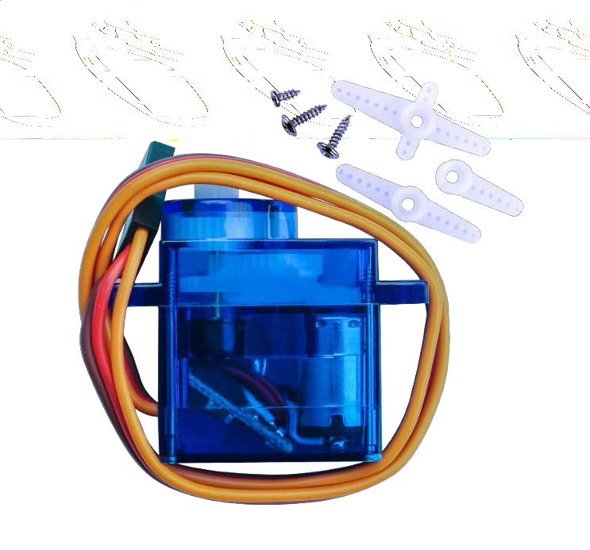
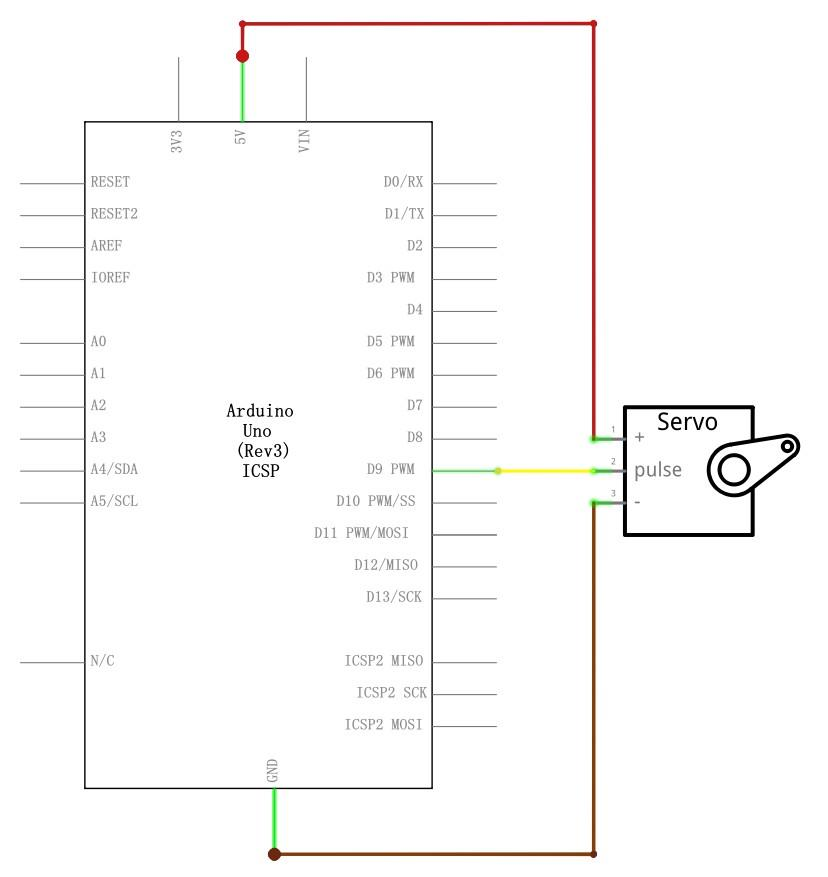
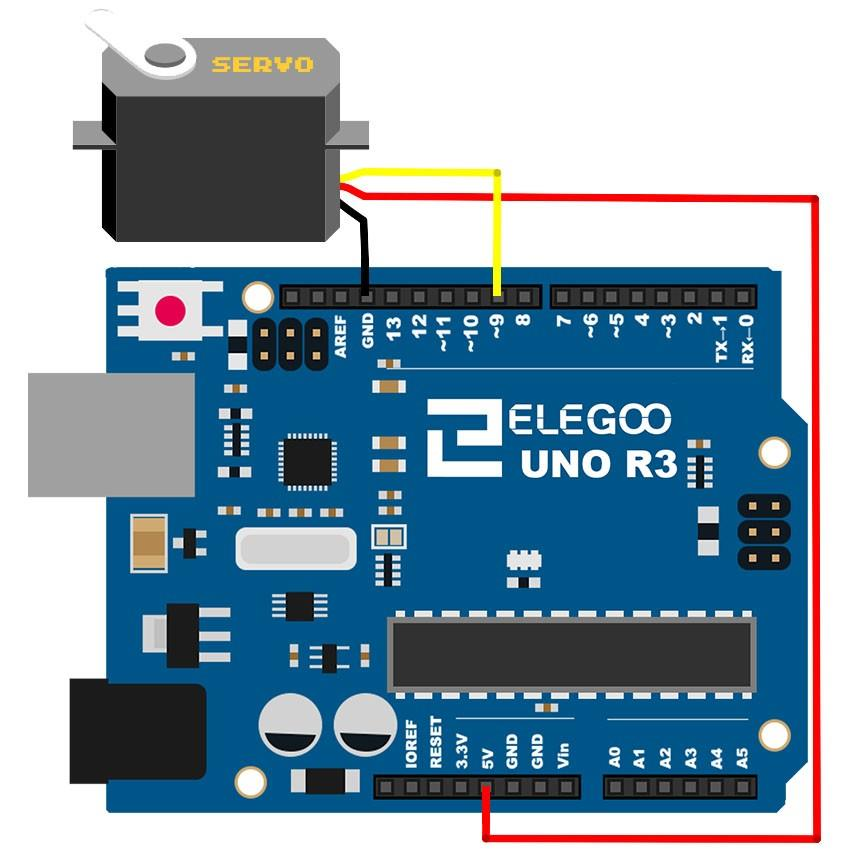
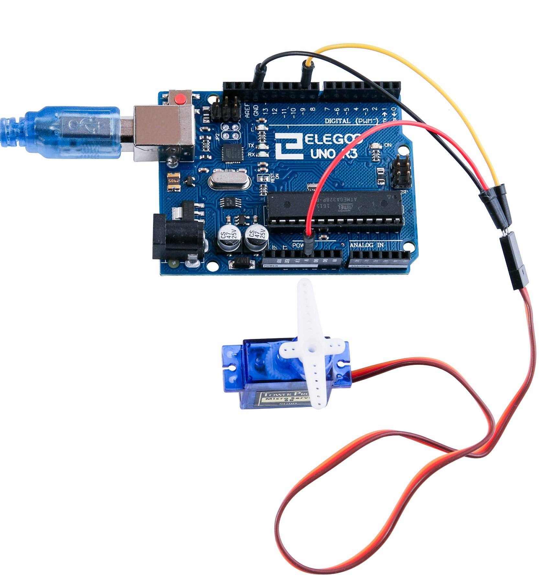

En esta Lección aprenderemos a utilizar y configurar un servomotor utilizando la placa de arduino, ademas veremos algunas diferentes utilidades que se le pueden dar a estos componentes electrónicos.
(1) x Elegoo Uno R3
(1) x Servomotor (SG90)
(3) x M M cables (cables macho a macho)
El servo es un tipo de motor eléctrico que sólo puede girar 180 grados, se controla
mediante el envío de impulsos eléctricos de la placa de arduino. Estos pulsos le dicen
al servo en que dirección debe moverse.
El Servomotor tiene tres cables, el marrón
es el cable a tierra y debe conectarse al puerto GND de la placa, el rojo es el cable de
corriente y debe conectarse al puerto de 5v y el naranja es el alambre de señal y
debe conectarse al puerto 9.
Algunas de las características de este servomotor SG90 son:
- Cable Universal para conectores JR y FP
- Longitud del cable: 25cm
- Velocidad: 0,12 seg/60 grados (4.8V), 0.10 sec/60 grados (6.0V) (sin carga)
- Puesto de par (4.8V): 1,6 kg/cm
- Temperatura: -30 ~ 60' C
- Voltaje de funcionamiento: 3.5 ~ 6V
- Dimensión: 1.26 en x 1,18 en x 0,47 en (3,2 x 3 cm x 1.2 cm)
- Peso: 4,73 onzas (134)



Una vez efectuado todo el cableado, descargaremos el script del siguiente este
link y lo cargaremos como hemos aprendido.
Antes de ejecutar este script, asegurate de se que ha instalado la biblioteca servo, de
lo contrario, el código no funcionará. Puedes descargarlo desde este link
En la foto, el cable marrón del servo se adapta a través del cable negro, el rojo se adapta a través del cable rojo y el naranja se adapta a través del cable amarillo.

Volver al índice